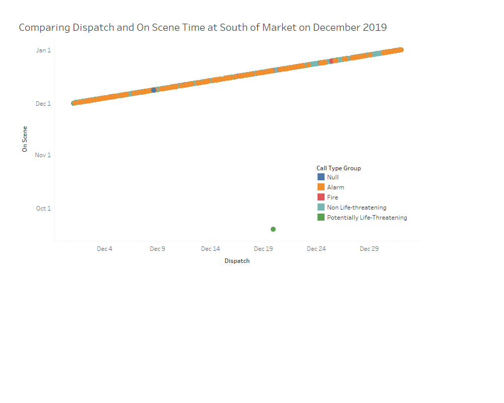
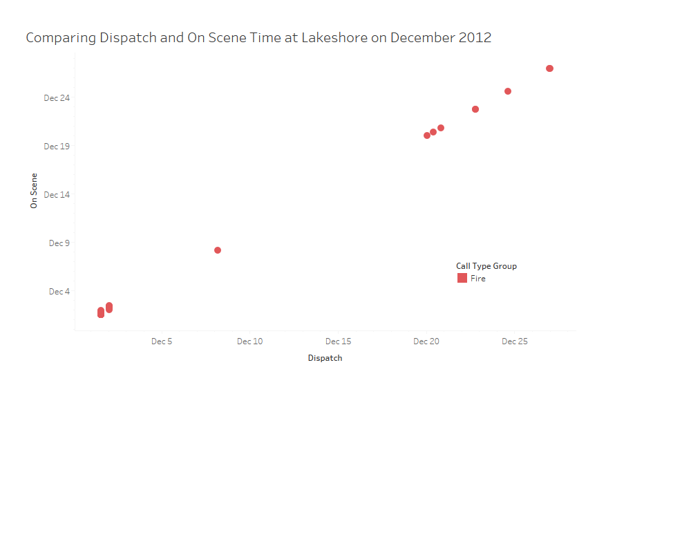

Analyzing Difference in Transportation Time in Neighborhoods
This graph measures the average difference of time between Dispatch Time, when 911 dispatches a unit to the location of the incident, and On-Scene Time, when the unit reaches that location for each Neighborhood.

To conserve space and optimize the graph, the y-axis consists of the average time it has taken for a unit to arrive on the scene after dispatch during that month from 2012-2019.
Abnormalities in the Data
During certain times in the year one can notice rises or declines in the averages. Specifically in 2012 and 2019 there have been abnormalities in the data.


On Decmember 2019 there was the odd difference of -85.3 minutes, so in this graph compare the dispatch and on scene time recorded during that month and year.
On December 2012 there was a significant rise in difference with fire related calls, here is the graph comparing dispatch and on scene time during that month and year.
